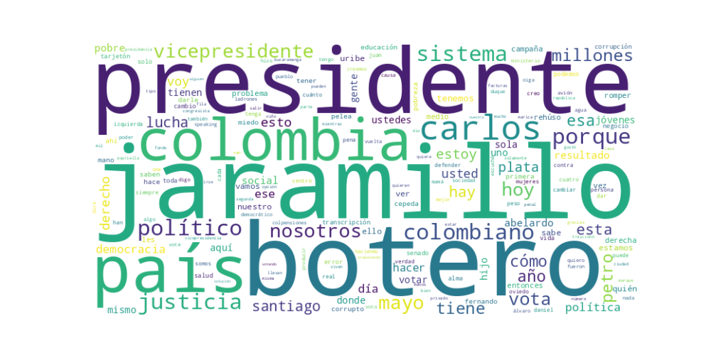

Seguidores: 203,412
1. Perfil de Comunicación: El candidato emplea un estilo de comunicación predominantemente informal, directo y visceral, cercano al lenguaje callejero y popular. Utiliza un registro coloquial, con frecuentes modismos colombianos ("vaina", "mijo", "berraca"), lo que busca generar identificación con el ciudadano común, especialmente jóvenes y clases populares. Su tono es cercano y desinhibido, rompiendo abiertamente con el protocolo político tradicional. Aunque aborda temas estructurales, evita el lenguaje técnico en favor de una narrativa emocional y de confrontación.
2. Temas Principales: 1. Corrupción y Justicia: Es el eje central. Retrata a la clase política tradicional (de izquierda y derecha) como una élite corrupta, ladrona y desconectada. Ejemplo: Acusa a figuras de todos los sectores (Petro, Uribe, Cepeda, Espriella) de robar, proteger a corruptos o beneficiarse del sistema. Propone una reforma judicial drástica, incluyendo penas más severas y la recuperación de herramientas como la pena de muerte para delitos graves de corrupción. 2. Pobreza y Desigualdad: Enmarca la pobreza (cita constantemente "31 millones de pobres") como el resultado directo del robo y la mala gestión de la clase política. Ejemplo: Contrasta el gasto en una película presidencial con la falta de agua en La Guajira, o los privilegios carcelarios con los colombianos que "comen una sola vez al día". 3. Juventud y Educación: Dirige un mensaje específico a los jóvenes, presentándolos como víctimas del sistema (excluidos, endeudados con el ICETEX) y como el motor del cambio. Ejemplo: Critica la falta de resultados en educación superior y promete oportunidades para que los jóvenes no tengan que "irse a lavar baños" al exterior. 4. "Romper el Sistema": Más que un tema, es un metarrelato. Define el "sistema" como una red corrupta e injusta que incluye a políticos, algunos empresarios, la justicia débil y las instituciones ineficientes. Su propuesta no es reformar, sino "romperlo" para construir algo nuevo.
3. Tono y Sentimiento Dominante: El tono es profundamente confrontacional, crítico y de denuncia. Predomina la indignación, la rabia contenida y el desafío hacia el establishment político en su totalidad. Aunque hay momentos propositivos (esbozando justicia social, capitalismo social, formalización minera), la energía discursiva se concentra en atacar y deslegitimar a los actores tradicionales ("izquierda y derecha"). Hay un componente esperanzador dirigido a quienes se sienten excluidos, pero se construye desde la oposición frontal al statu quo.
4. Palabras Clave de Poder: * Romper el sistema: Eslogan central y hashtag omnipresente. * Justicia social: La defiende como un ideal genuino, pero la desvincula de la izquierda tradicional, acusándola de haberla secuestrado. * Políticos corruptos / ladrones: Términos usados de manera intercambiable para la clase política. * 31 millones de pobres: Cifra repetida como símbolo del fracaso del sistema. * Botero Presidente: Consigna de cierre repetitiva para anclar la marca del candidato presidencial. * No nos crean tan maricas: Frase provocadora que busca interpelar el orgullo y la dignidad del votante, instándolo a no seguir siendo engañado. * Mano dura: Aparece asociada a su propuesta de justicia y seguridad.
5. Conclusión Estratégica: La estrategia de comunicación del candidato Cuevas está diseñada para capitalizar el hartazgo, la desconfianza y la indignación de un electorado, principalmente joven y de clases medias y populares, que se siente traicionado por toda la clase política tradicional. Su discurso busca evocar una identidad de "pueblo" versus "la élite corrupta", borrando las líneas ideológicas izquierda-derecha para reemplazarlas por la dicotomía "nosotros (los de abajo, los honestos) vs. ellos (los de arriba, los ladrones)". Habla en un lenguaje de batalla ("pelea", "lucha", "romper"), posicionándose como el portavoz sincero y radical de quienes no tienen voz. El objetivo final es movilizar el voto de protesta y el voto joven alrededor de un mensaje de ruptura total, prometiendo justicia implacable como prerrequisito para cualquier cambio social o económico. Es una comunicación de desquite político que busca galvanizar a los desconectados del sistema.
1. Resumen del Patrón de Éxito: El éxito de su comunicación se basa en una combinación de cercanía humana cruda y confrontación emocional directa. No utiliza un discurso pulido, sino un lenguaje coloquial, casi de conversación callejera, que prioriza la autenticidad y la conexión emocional por encima de la precisión técnica. Los videos más exitosos funden anécdotas personales con una narrativa de lucha contra un "sistema" corrupto, generando una identificación inmediata con el ciudadano común frustrado.
2. Tácticas de Comunicación Clave: * Autenticidad Performada y Lenguaje Coloquial: Abandona el lenguaje político formal. Usa modismos ("vaina", "berraca"), repeticiones espontáneas y un tono de indignación conversacional. Esto no suena a discurso, suena a una persona hablando de igual a igual, creando una ilusión de proximidad y "verdad" no mediada. * Definición Binaria y Confrontación Agresiva: Construye su mensaje sobre un contraste radical: "Nosotros" (el pueblo, los jóvenes, los honrados) vs. "Ellos" (la vieja política corrupta de izquierda y derecha). Define enemigos claros (Petro, De la Espriella, Manzur) y usa un lenguaje de batalla ("romper el sistema", "hay que ganarles"). * Apelación a la Indignación y la Justicia Poética: La emoción principal no es la esperanza abstracta, sino la indignación canalizada. Muestra casos concretos de corrupción (UNGRD, película de Petro) o insultos homofóbicos para provocar rabia y, acto seguido, se presenta como el instrumento de la "justicia que llega", ofreciendo catarsis emocional. * Llamados a la Acción Sencillos y Repetitivos: Junto a la emoción, incluye instrucciones de voto ultra-claras y repetidas ("primera fila, mano derecha", "Botero Presidente", "número 70"). Convierte el impulso emocional en una acción concreta y fácil de recordar.
3. Temas de Mayor Resonancia: * Corrupción y Castigo: Casos específicos de desfalco (UNGRD) y privilegios (película costosa) que simbolizan el robo sistémico. * Fracaso de la "Clase Política" Tradicional: Ataque transversal que no distingue entre gobierno y oposición establecida ("los políticos de derecha... estos políticos de izquierda nos salieron iguales"). * Defensa del "Pueblo Llano" y los Jóvenes: Se posiciona como voz de los excluidos, los jóvenes y las víctimas de un sistema que no funciona (salud, seguridad). * Homofobia como Símbolo de la Vieja Política: Usa el insulto homofóbico de un rival para redefinir "marica" como aquel que se deja engañar por el establishment, conectando con un sentido de dignidad y resistencia.
4. Perfil de la Audiencia Implícita: Jóvenes y votantes cínicos o desencantados, principalmente de su base movilizada. El lenguaje informal, el uso de redes, el mensaje anti-sistema y el enfoque en la renovación generacional apuntan a un electorado que rechaza la comunicación política tradicional, se siente hablado en su mismo idioma (literal y figurado) y busca una opción de protesta visceral contra el statu quo. No busca persuadir al indeciso moderado con datos, sino energizar a un núcleo de apoyo con rabia y pertenencia.
5. Conclusión Estratégica: La clave fundamental es la destilación del descontento en una identidad. No vende un programa de gobierno, vende una identidad compartida de "los que despertaron". Su poder radica en transformar la frustración compleja en un relato simple y emocionalmente satisfactorio: el sistema es corrupto, todos te mienten, yo hablo claro, únete a nosotros para romperlo. Lo diferente y potente es que renuncia por completo a la solemnidad del discurso político tradicional para adoptar la estética y el tono de la conversación digital indignada, actuando más como un influencer de la protesta que como un candidato convencional. Su mensaje no es "tengo la solución", es "yo también tengo rabia, y juntos podemos darles una paliza en las urnas".

Caption: Un taxista que me escuchó en la radio y vino hasta acá solo para decirme que quería emprender. Por personas como él es que estoy en esta lucha. ¿Ya sabes cómo votarnos? Primera fila, a mano derecha en el tarjetón. @santiagobotero.jaramillo #romperelsistema⚒️ #carlosfernandocuevas
Likes: 3,938 | Comentarios: 8 | Reproducciones: 1,942
Ver en InstagramCaption: La democracia la perratearon, democracia es que las personas puedan participar en el grupo virtuoso de la sociedad. @santiagobotero.jaramillo #romperelsistema⚒️ #carlosfernandocuevas
Likes: 3,220 | Comentarios: 5 | Reproducciones: 1,864
Ver en InstagramCaption: Los jóvenes sí podemos. Los que no nos quieren ver son los que llevan décadas robándose a Colombia. Y el resultado: 31 millones de pobres, nadie puede salir a la calle sin miedo. Ya fue suficiente. @santiagobotero.jaramillo #carlosfernandocuevas #romperelsistema⚒️
Likes: 3,726 | Comentarios: 4 | Reproducciones: 3,536
Ver en Instagram